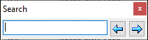

and
and  buttons to navigate.
buttons to navigate.
You use quick search to quickly find a person. You can access quick search in the main window via the "Edit\Search" menu and in the tree diagram window via the same menu, or by using the [Ctrl + Q] hotkey.
Just enter in the opened window any part of name and then use the and buttons to navigate.
